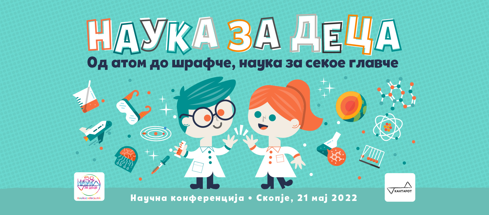

Во организација на Фондација КАНТАРОТ во сабота, 21 мај, ќе се одржи конференција “Наука за деца”. Темата на конференцијата е популаризација на науката кај најмладите.
Под мотото „Од атом до шрафче, наука за секое главче“, конференцијата се состои од 2 дела. Во рамки на првиот дел (од 12 до 15 часот), под водство на искусни научници ќе бидат организирани интересни работилници во живо со дечиња на возраст од 7 до 12 години.
Вториот дел од конференцијата (од 15:15 до 17:45) е наменет за родителите, наставниците и широката публика. Преку два научни панели, десетина истакнати македонски научници и професионалци ќе ја презентираат својата визија за иднината на образованието и научното описменување. Овој дел од конференцијата ќе се одвива online и сите заинтересирани ќе можат да го следат на бесплатен web-stream по претходна регистрација.
Конференцијата е финансирана од С(ц)иеста заедницата, која ја сочинуваат над 300 научници родум од Македонија, а комуникациски партнер е Публицис групацијата.
сабота, 21 мај 2022
ПРВ ДЕЛ: РАБОТИЛНИЦИ ВО ЖИВО ЗА ДЕЦА ОД 7 ДО 12 ГОДИНИ
РАБОТИЛНИЦИТЕ СЕ ПОЛНИ, ОНЛАЈН ДЕЛОТ ЗА ВОЗРАСНИ Е СÈ УШТЕ ОТВОРЕН
ЛОКАЦИЈА: САЛОНОТ НА ТЕЛЕКОМ НА ПЛОШТАД ВО СКОПЈЕ
|
10:00 - 12:00 |
НЗД работилници (во живо) РАБОТИЛНИЦАТА ВО 10 Е ПОЛНА а) Правиме холограми со д-р Менка Стојанова б) Магијата на магнетите со м-р Драгана Стикова и Дафинка Срезоска |
|
12:00 - 13:00 |
ПЕТ ЗОШТО, ПЕТ ЗАТОА (во живо) |
|
13:00 - 15:00 |
НЗД работилници (во живо) РАБОТИЛНИЦАТА ВО 13 Е ПОЛНА а) Правиме холограми со д-р Менка Стојанова б) Магијата на магнетите со м-р Драгана Стикова и Дафинка Срезоска |
ВТОР ДЕЛ: ОНЛАЈН НАУЧНИ ПАНЕЛИ
ЛОКАЦИЈА: ФЕЈСБУК СТРАНИЦАТА НА НАУКА ЗА ДЕЦА
ЛИНК ЗА СЛЕДЕЊЕ НА ВЕБ СТРИМОТ ВО ЖИВО
|
15:15 - 16:30 |
ПАНЕЛ 1: УЧЕЊЕ НИЗ ИГРА (онлајн)
|
|
16:30 - 17:45 |
ПАНЕЛ 2: ТЕХНОЛОГИЈАТА И ИДНИНАТА НА ОБРАЗОВАНИЕТО (онлајн)
|
ЗАВРШЕН ДЕЛ: КОКТЕЛ-ДРУЖЕЊЕ ЗА ДОНАТОРИТЕ НА КОНФЕРЕНЦИЈАТА
ЛОКАЦИЈА: ПОКРИВОТ НА ИНТЕРТЕК
|
19:00 - ДОЦНА |
КОКТЕЛ ЛАБОРАТОРИЈА ОД SPEAKEASY |
Доколку сакате да нè поддржите и да ни се придружите на забавата на покривот на Интертек, можете да ни донирате преку следниов линк